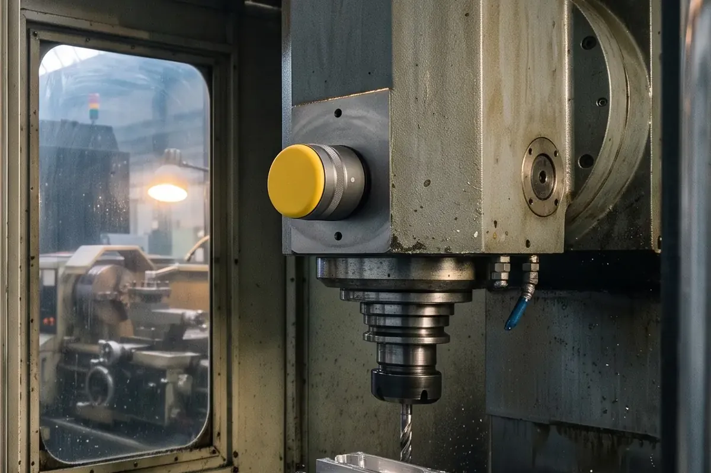
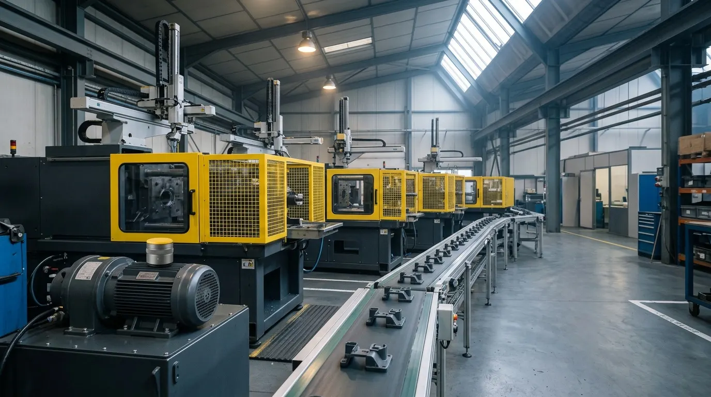

01 / Écoute
Des capteurs sur vos machines critiques
Vibrations, température, courant : posés en une demi-journée, sans arrêter la ligne.
- Pose incluse, 12 capteurs
- Données chez vous, pas dans un cloud étranger

Vigie, maintenance prédictive pour ateliers d’usinage, Grenoble. Faites défiler : chaque offre vient se poser sur la précédente. Démo : textes fictifs.
Vibrations, température, courant : posés en une demi-journée, sans arrêter la ligne.

Une dérive sur un roulement déclenche une alerte lisible, avec la pièce à commander.

Nos techniciens connaissent vos machines : ils arrivent avec la bonne pièce.

Pannes évitées, heures gagnées, pièces à prévoir : un bilan d’une page, chiffré.

Aucun épinglage : les cartes sont collées en haut de l’écran (position sticky). En mouvement réduit, elles se suivent comme une liste, sans recul ni voile.